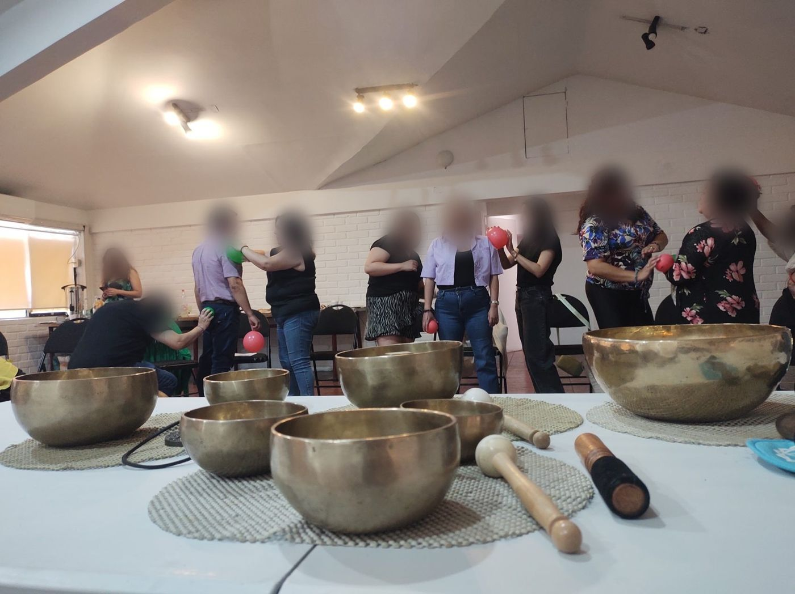
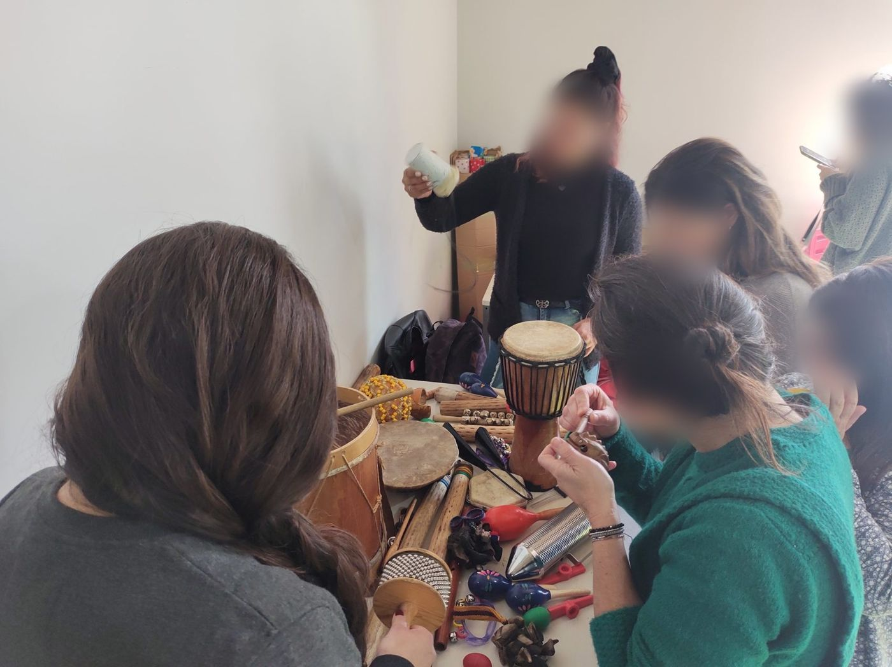
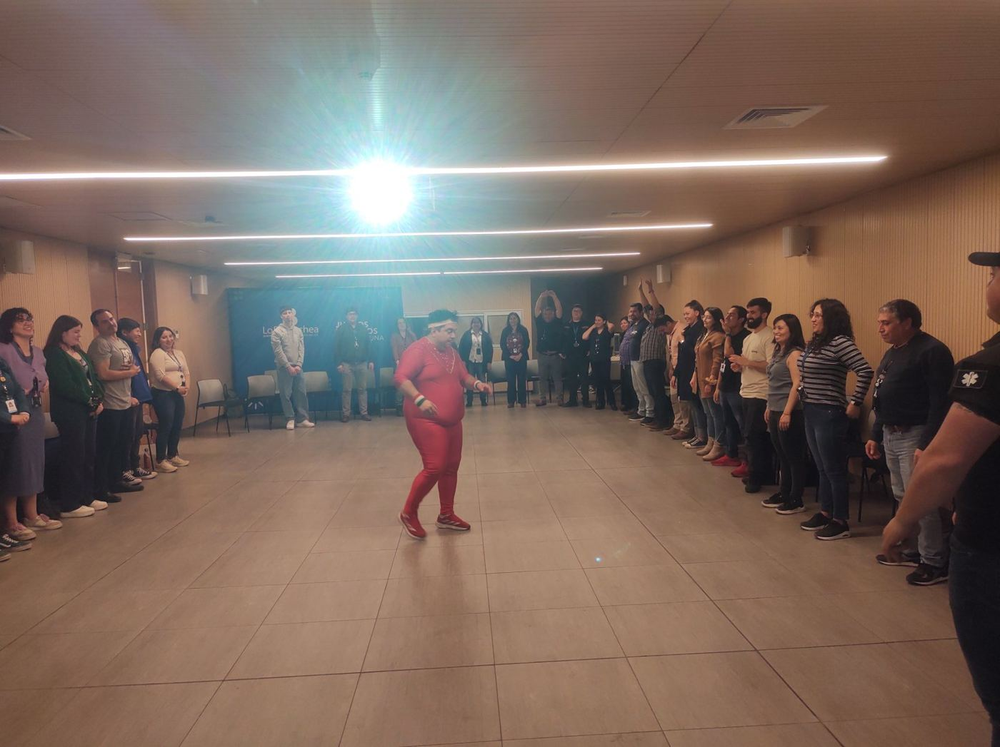
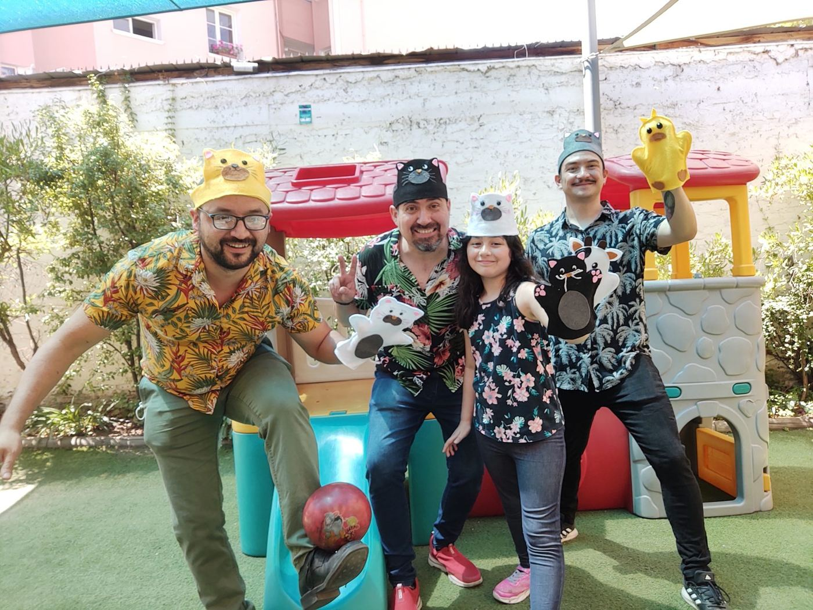
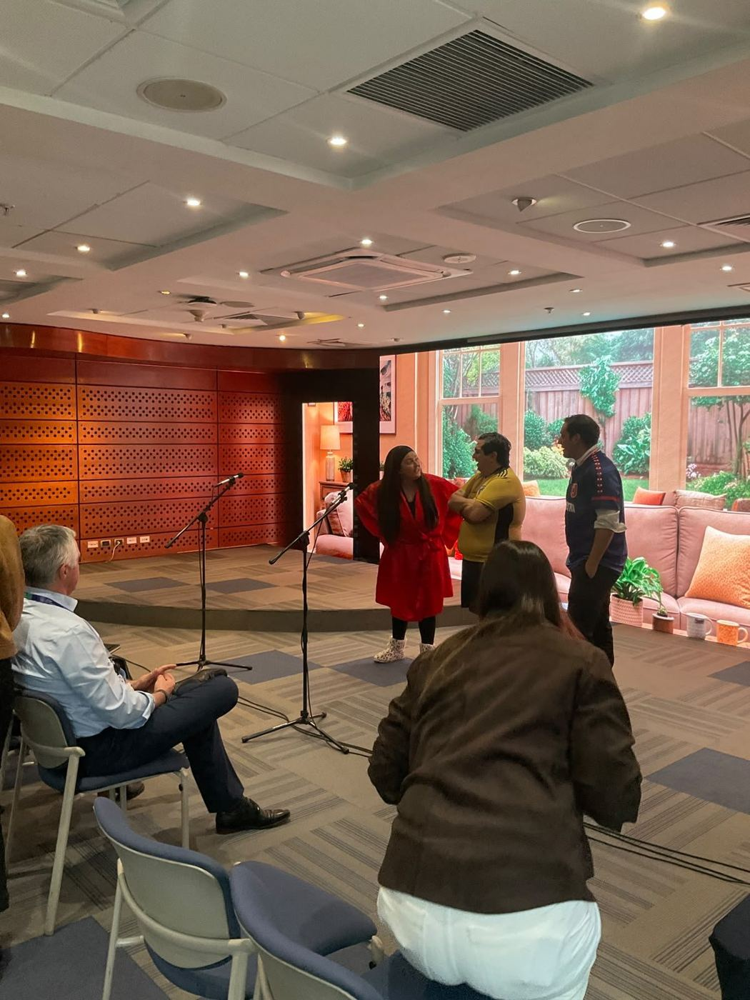
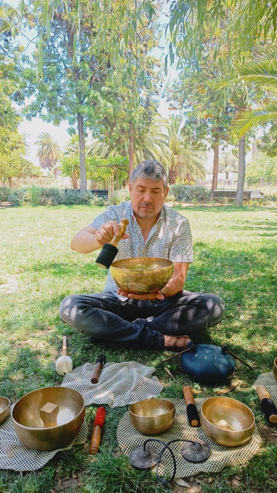

Un viaje sonoro, corporal y musical hacia el bienestar de las comunidades educativas.
Cuando el equipo está bien, se nota en el aula. Un equipo que se cuida comunica mejor, convive mejor y sostiene con más energía el trabajo con niños, niñas, jóvenes y familias.

La labor educativa tiene una alta carga emocional: jornadas extensas, situaciones de convivencia complejas y la responsabilidad diaria de acompañar a otros. CuidArte es una capacitación vivencial que entrega herramientas concretas de gestión emocional y autocuidado, aplicables desde el día siguiente.
Integra musicoterapia, juego, técnicas corporales, atención plena y artes expresivas. No es una charla: el equipo juega, toca instrumentos, se mueve, crea y se detiene a escucharse. No se requieren conocimientos previos y todo el equipamiento está incluido.
Mayor conciencia de los estados internos y las necesidades personales.
Herramientas para gestionar el estrés y las emociones difíciles.
Recursos expresivos para el bienestar y para el aula.
Vínculos más sanos, comunicación empática y sentido de equipo.
Fragmentos de jornadas reales con equipos educativos y profesionales.
Fortalecer en los equipos herramientas prácticas de gestión emocional y autocuidado mediante metodologías vivenciales, para favorecer el bienestar personal, el clima laboral y el ejercicio profesional.
Instrumentos musicales de fácil ejecución y set de cuencos tibetanos y de cuarzo.
Acceso a academia.sonofrecuencia.cl con material descargable y prácticas para continuar en casa.
Certificado de participación e informe final de la actividad para el establecimiento.

La jornada puede sumar una sesión de risoterapia a cargo de un profesional especialista: ejercicios prácticos para reír, liberar tensiones y fortalecer el ánimo del equipo. Se cotiza por separado.
Requisitos: sala amplia y silenciosa sin sillas fijas, colchonetas o mats, y equipo de sonido. Grupos ideales de hasta 20 personas; es posible trabajar con grupos de hasta 30.
Además de CuidArte, podemos sumar experiencias para los equipos, los niños y las familias, el mismo día de la capacitación o en otra fecha.

La banda invita a niños, niñas y familias a cantar, tocar, moverse y jugar. Ideal para jardines infantiles, celebraciones y cierres de año.

Una obra de teatro con contenido creado a la medida de su institución, por ejemplo sobre Ley Karin, inclusión, buen trato o convivencia. Puede presentarse después de la capacitación o en otra fecha.

Fundador de Sonofrecuencia · Musicoterapeuta · Magíster en Docencia Universitaria
Más de quince años acompañando a comunidades educativas, equipos profesionales y organizaciones en procesos de bienestar, gestión emocional y cohesión de equipos.
En capacitaciones de bienestar y gestión emocional, a través de OTEC Cree Capacitaciones y Fundación Honra.
entre otras instituciones.
años de experiencia en educación y comunidad
personas beneficiadas en proyectos, capacitaciones y docencia
proyectos adjudicados con fondos públicos
Cada jornada se cotiza a la medida de su establecimiento: número de participantes, formato y ubicación.
Financiable a través de la franquicia tributaria SENCE, mediante OTEC asociada.
Con factura exenta de Sonofrecuencia.
Puede incorporarse como acción de bienestar y convivencia en su PME.
Antes de decidir, invitamos al equipo directivo a vivir 45 minutos de CuidArte: presencial en la Región Metropolitana u online en regiones.
Conocemos al equipo y sus necesidades.
Propuesta a la medida en 48 horas.
Fecha, espacio y, si aplica, inscripción SENCE.
Ejecución, certificados e informe final.
Jornadas en todo Chile; fuera de la Región Metropolitana se cotizan traslado y viático. El financiamiento vía SENCE está sujeto a los requisitos de la franquicia tributaria.
Escríbanos para coordinar la experiencia demostrativa o recibir una cotización a la medida.